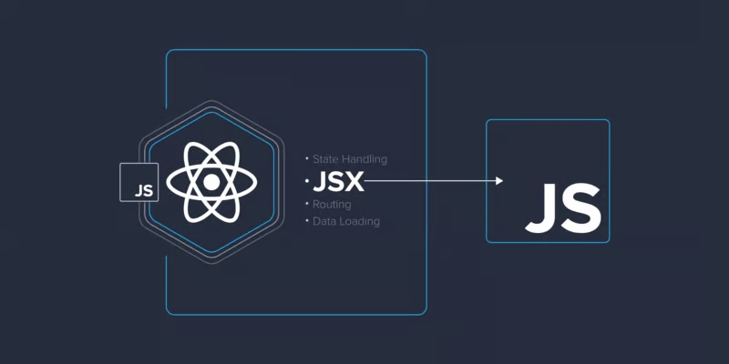

Not everybody likes JavaScript frameworks, nor are they always applicable. But even when we don't want to or can't use them, there are some parts that are handy to have. In this tutorial, Toptal Freelance JavaScript Developer Juan Carlos Arias Ambriz proposes a simple way to recapture some of the benefits of using JSX while working in vanilla JS.
I was opposed to the use of frameworks in the past. However, lately, I’ve had the experience of working with React and Angular in some of my projects. The first couple of times I opened my code editor and started writing code in Angular it felt weird and unnatural; especially after more than ten years of coding without using any frameworks. After a while, I decided to commit to learning these technologies. Very quickly one big difference became apparent: it was so easy to manipulate the DOM, so easy to adjust the order of the nodes when needed, and it didn’t take pages and pages of code to build a UI.
Although I still prefer the freedom of not being attached to a framework or an architecture, I couldn’t ignore the fact that creating DOM elements in one is much more convenient. So I started looking at ways to emulate the experience in vanilla JS. My goal is to extract some of those ideas from React and demonstrate how the same principles can be implemented in plain JavaScript (often referred to as vanilla JS) to make developer’s lives a little bit easier. To accomplish this, let’s build a simple app for browsing GitHub projects.